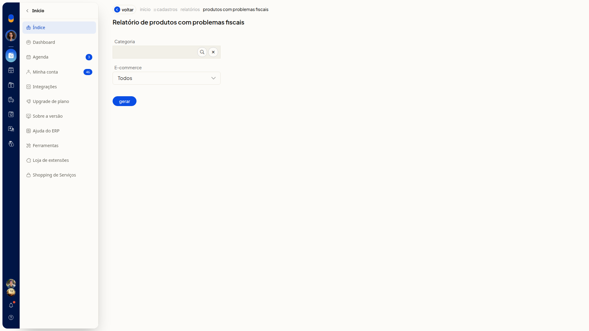

Gerar o relatório de produtos com problemas fiscais
No ERP da Olist, você gera o relatório de produtos com problemas fiscais. Antes de gerar, pode filtrar por categoria e por ecommerce.
Instruções
-
Acesse Cadastros > Produtos.

-
Clique em Mais ações.

-
Clique em Produtos com problemas fiscais.
-
Busque uma categoria em Categoria, se quiser. O campo não é obrigatório.
-
Mantenha ou troque E-commerce. O filtro abre em Todos e não é obrigatório.

-
Clique em Gerar para emitir o relatório.